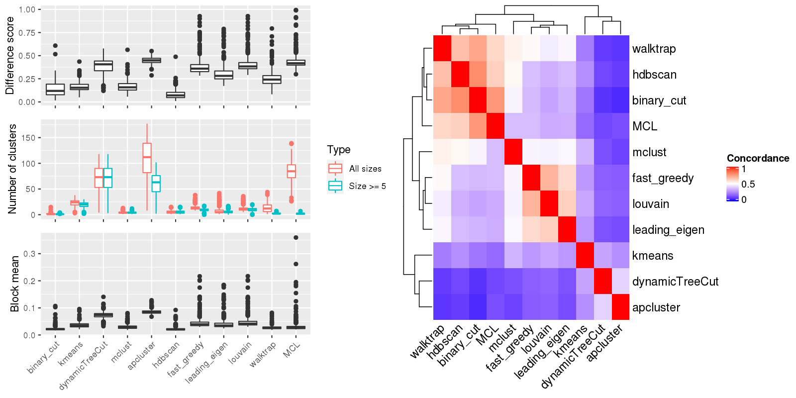

Figure 1.Compare clustering results. Left panel: The difference score, number of clusters and the block mean of different clusterings. Right panel: Concordance between clustering methods. The concordance measures how similar two clusterings are. The definition of the concordance score can be found here.

Table 1.Number of clusters identified by each clustering method. Numbers in the table indicate the number of clusters. The numbers inside the parentheses are the number of clusters with size >= 5.
| ID | binary_cut | kmeans | dynamicTreeCut | mclust | apcluster | hdbscan | fast_greedy | leading_eigen | louvain | walktrap | MCL | Details |
|---|---|---|---|---|---|---|---|---|---|---|---|---|
| E-GEOD-101794_g2_g1 | 2(2) | 25(20) | 83(83) | 9(9) | 127(70) | 8(8) | 12(9) | 6(6) | 9(8) | 13(3) | 72(1) | view |
| E-GEOD-10311_A-AFFY-44_g6_g4 | 1(1) | 23(22) | 93(93) | 2(2) | 148(79) | 6(6) | 13(10) | 6(6) | 12(12) | 32(4) | 97(3) | view |
| E-GEOD-104288_g2_g1 | 4(3) | 17(15) | 28(28) | 3(3) | 37(22) | 3(3) | 10(3) | 3(3) | 7(6) | 8(3) | 27(2) | view |
| E-GEOD-10718_A-AFFY-44_g4_g3 | 1(1) | 26(23) | 91(91) | 4(4) | 144(85) | 3(3) | 13(11) | 4(4) | 10(10) | 12(2) | 108(2) | view |
| E-GEOD-10797_A-AFFY-37_g1_g3 | 1(1) | 22(18) | 78(78) | 4(4) | 125(71) | 10(10) | 14(12) | 6(6) | 11(10) | 29(4) | 139(4) | view |
| E-GEOD-10927_A-AFFY-44_g2_g3 | 1(1) | 18(16) | 83(83) | 4(4) | 125(72) | 10(10) | 13(8) | 3(3) | 8(8) | 4(2) | 77(3) | view |
| E-GEOD-11285_A-AFFY-44_g1_g2 | 1(1) | 19(19) | 86(86) | 3(3) | 134(74) | 3(3) | 13(10) | 6(6) | 12(12) | 19(4) | 92(5) | view |
| E-GEOD-11324_A-AFFY-44_g1_g4 | 1(1) | 23(20) | 80(80) | 3(3) | 133(73) | 11(11) | 15(12) | 6(5) | 12(12) | 16(3) | 107(3) | view |
| E-GEOD-11348_A-AFFY-44_g6_g3 | 2(2) | 18(18) | 106(106) | 6(6) | 160(83) | 3(3) | 12(9) | 7(7) | 10(9) | 15(4) | 94(4) | view |
| E-GEOD-11352_A-AFFY-44_g3_g4 | 1(1) | 19(17) | 107(107) | 5(5) | 155(87) | 11(11) | 10(9) | 3(3) | 9(9) | 7(2) | 103(1) | view |
| E-GEOD-11428_A-AFFY-44_g3_g1 | 1(1) | 22(22) | 97(97) | 5(5) | 142(83) | 6(6) | 10(9) | 4(4) | 8(8) | 4(2) | 89(1) | view |
| E-GEOD-11783_A-AFFY-44_g1_g2 | 1(1) | 22(22) | 104(104) | 2(2) | 153(81) | 11(11) | 12(10) | 8(8) | 11(11) | 14(4) | 127(4) | view |
| E-GEOD-11791_A-AFFY-44_g3_g4 | 1(1) | 21(14) | 64(63) | 3(3) | 97(51) | 5(5) | 18(15) | 12(6) | 12(12) | 26(2) | 93(2) | view |
| E-GEOD-11839_A-AFFY-44_g2_g1 | 1(1) | 27(25) | 64(64) | 3(3) | 101(50) | 3(3) | 14(12) | 7(7) | 13(13) | 15(2) | 85(4) | view |
| E-GEOD-12265_A-AFFY-44_g1_g4 | 1(1) | 27(23) | 74(74) | 3(3) | 114(60) | 6(6) | 14(11) | 6(6) | 14(11) | 34(3) | 113(3) | view |
| E-GEOD-12355_A-AFFY-44_g11_g12 | 1(1) | 28(25) | 103(103) | 3(3) | 147(83) | 10(10) | 12(7) | 3(3) | 11(8) | 7(2) | 105(2) | view |
| E-GEOD-12355_A-AFFY-44_g4_g6 | 1(1) | 22(21) | 87(87) | 5(5) | 119(72) | 5(5) | 10(7) | 4(4) | 9(6) | 3(2) | 71(2) | view |
| E-GEOD-12355_A-AFFY-44_g7_g8 | 1(1) | 20(18) | 96(96) | 3(3) | 147(84) | 10(10) | 9(7) | 4(4) | 8(7) | 8(2) | 98(2) | view |
| E-GEOD-12355_A-AFFY-44_g7_g9 | 1(1) | 29(26) | 84(84) | 3(3) | 130(72) | 10(10) | 11(8) | 3(3) | 11(5) | 5(2) | 86(4) | view |
| E-GEOD-12446_A-AFFY-44_g1_g4 | 3(3) | 17(14) | 27(27) | 3(3) | 37(27) | 5(5) | 12(5) | 3(3) | 10(7) | 6(2) | 43(4) | view |
| E-GEOD-12452_A-AFFY-44_g2_g1 | 1(1) | 27(25) | 75(75) | 3(3) | 97(62) | 4(4) | 13(8) | 4(4) | 7(6) | 7(2) | 74(2) | view |
| E-GEOD-12513_A-AFFY-44_g4_g3 | 1(1) | 12(8) | 27(27) | 5(5) | 47(27) | 5(5) | 20(12) | 23(14) | 21(15) | 1(1) | 63(1) | view |
| E-GEOD-12886_A-AFFY-44_g1_g2 | 1(1) | 21(18) | 88(88) | 4(4) | 130(66) | 9(9) | 13(10) | 5(5) | 12(12) | 18(4) | 99(2) | view |
| E-GEOD-12963_A-AFFY-44_g3_g1 | 3(3) | 18(18) | 78(78) | 2(2) | 120(70) | 3(3) | 10(8) | 5(5) | 7(5) | 3(2) | 64(2) | view |
| E-GEOD-13637_A-AFFY-44_g1_g2 | 2(2) | 22(21) | 111(111) | 4(4) | 158(88) | 11(11) | 10(9) | 4(4) | 10(9) | 19(3) | 102(1) | view |
| E-GEOD-13637_A-AFFY-44_g5_g1 | 4(3) | 23(21) | 89(89) | 8(8) | 138(77) | 12(12) | 14(10) | 5(5) | 10(10) | 17(3) | 107(1) | view |
| E-GEOD-13637_A-AFFY-44_g5_g3 | 3(3) | 22(21) | 68(68) | 2(2) | 131(73) | 13(13) | 11(6) | 4(4) | 8(7) | 8(3) | 77(2) | view |
| E-GEOD-13763_A-AFFY-44_g1_g4 | 1(1) | 31(27) | 115(114) | 4(4) | 164(89) | 3(3) | 13(9) | 7(7) | 10(10) | 21(3) | 116(4) | view |
| E-GEOD-13763_A-AFFY-44_g3_g4 | 1(1) | 29(26) | 99(99) | 5(5) | 145(76) | 3(3) | 13(11) | 7(7) | 12(12) | 25(3) | 116(3) | view |
| E-GEOD-13887_A-AFFY-44_g3_g2 | 1(1) | 30(25) | 97(97) | 4(4) | 134(75) | 3(3) | 11(10) | 4(4) | 8(8) | 13(2) | 115(2) | view |
| E-GEOD-13987_A-AFFY-44_g5_g6 | 1(1) | 27(25) | 106(106) | 3(3) | 156(76) | 3(3) | 13(11) | 4(4) | 10(9) | 21(3) | 117(3) | view |
| E-GEOD-14905_A-AFFY-44_g3_g2 | 1(1) | 17(16) | 65(65) | 4(4) | 101(57) | 8(8) | 10(8) | 4(4) | 11(8) | 12(3) | 64(1) | view |
| E-GEOD-14995_A-AFFY-44_g1_g2 | 1(1) | 28(24) | 88(88) | 4(4) | 142(73) | 8(8) | 12(8) | 3(3) | 9(9) | 13(2) | 88(1) | view |
| E-GEOD-16066_A-AFFY-44_g2_g1 | 1(1) | 18(16) | 73(73) | 2(2) | 122(70) | 4(4) | 15(12) | 9(9) | 14(14) | 15(2) | 106(2) | view |
| E-GEOD-1615_A-AFFY-33_g6_g5 | 1(1) | 26(16) | 41(41) | 6(6) | 73(37) | 3(3) | 20(15) | 22(14) | 19(17) | 2(1) | 99(1) | view |
| E-GEOD-16179_A-AFFY-44_g1_g4 | 1(1) | 25(21) | 83(83) | 4(4) | 116(68) | 9(9) | 13(8) | 4(4) | 8(7) | 8(2) | 87(3) | view |
| E-GEOD-16837_A-AFFY-44_g22_g11 | 1(1) | 22(19) | 62(62) | 5(5) | 103(54) | 3(3) | 14(10) | 4(4) | 13(11) | 16(2) | 92(2) | view |
| E-GEOD-16837_A-AFFY-44_g22_g21 | 1(1) | 31(24) | 69(69) | 5(5) | 108(59) | 3(3) | 13(12) | 4(4) | 12(12) | 13(2) | 85(1) | view |
| E-GEOD-16837_A-AFFY-44_g22_g29 | 1(1) | 23(21) | 60(60) | 5(5) | 97(52) | 3(3) | 15(10) | 8(8) | 14(12) | 12(2) | 79(2) | view |
| E-GEOD-16837_A-AFFY-44_g22_g3 | 1(1) | 26(24) | 64(64) | 6(6) | 94(52) | 3(3) | 16(10) | 7(7) | 10(10) | 13(2) | 85(2) | view |
| E-GEOD-16837_A-AFFY-44_g22_g4 | 1(1) | 24(18) | 65(65) | 5(5) | 94(49) | 3(3) | 15(12) | 5(5) | 12(12) | 14(2) | 79(2) | view |
| E-GEOD-17508_A-AFFY-44_g1_g2 | 2(2) | 26(20) | 67(67) | 5(5) | 96(57) | 7(7) | 14(10) | 6(6) | 13(11) | 17(3) | 83(2) | view |
| E-GEOD-18105_A-AFFY-44_g1_g2 | 1(1) | 18(16) | 46(46) | 4(4) | 62(38) | 6(6) | 14(9) | 8(6) | 12(7) | 23(3) | 62(1) | view |
| E-GEOD-18791_A-AFFY-44_g11_g2 | 3(3) | 22(18) | 69(69) | 2(2) | 97(52) | 10(10) | 10(9) | 7(7) | 9(7) | 11(3) | 73(2) | view |
| E-GEOD-18791_A-AFFY-44_g11_g6 | 3(3) | 21(20) | 65(65) | 2(2) | 96(61) | 9(9) | 11(9) | 8(6) | 10(9) | 14(4) | 68(2) | view |
| E-GEOD-19314_A-AFFY-44_g2_g4 | 3(2) | 7(5) | 10(9) | 2(2) | 20(8) | 1(1) | 29(5) | 33(4) | 26(5) | 1(1) | 58(1) | view |
| E-GEOD-19639_A-AFFY-44_g2_g8 | 2(2) | 24(21) | 87(87) | 7(7) | 139(75) | 13(13) | 13(9) | 6(6) | 9(9) | 18(3) | 85(2) | view |
| E-GEOD-19650_A-AFFY-44_g4_g3 | 1(1) | 24(24) | 94(94) | 3(3) | 140(89) | 14(14) | 10(8) | 5(5) | 7(5) | 5(2) | 106(4) | view |
| E-GEOD-20193_A-AFFY-44_g3_g1 | 1(1) | 28(21) | 53(53) | 3(3) | 86(49) | 5(5) | 19(13) | 14(11) | 17(13) | 17(2) | 84(2) | view |
| E-GEOD-20602_A-AFFY-33_g1_g2 | 1(1) | 17(13) | 51(51) | 4(4) | 67(42) | 5(5) | 13(11) | 10(7) | 12(11) | 20(3) | 73(3) | view |
| E-GEOD-21610_A-AFFY-44_g5_g1 | 1(1) | 26(19) | 50(50) | 5(5) | 82(47) | 3(3) | 17(12) | 8(7) | 15(14) | 1(1) | 83(2) | view |
| E-GEOD-22139_A-AFFY-44_g6_g3 | 1(1) | 27(24) | 87(86) | 2(2) | 140(71) | 3(3) | 11(8) | 4(4) | 12(10) | 15(2) | 87(3) | view |
| E-GEOD-22278_A-AFFY-41_g5_g1 | 1(1) | 25(24) | 105(105) | 4(4) | 158(87) | 4(4) | 14(8) | 4(4) | 8(8) | 14(2) | 138(3) | view |
| E-GEOD-22611_A-AFFY-44_g1_g6 | 1(1) | 23(20) | 63(62) | 4(4) | 101(53) | 3(3) | 12(11) | 5(5) | 12(11) | 26(3) | 84(2) | view |
| E-GEOD-22611_A-AFFY-44_g2_g3 | 1(1) | 22(19) | 70(70) | 5(5) | 116(65) | 8(8) | 11(9) | 4(4) | 11(10) | 14(2) | 78(1) | view |
| E-GEOD-22611_A-AFFY-44_g9_g4 | 2(2) | 21(19) | 82(82) | 4(4) | 114(69) | 7(7) | 10(7) | 6(6) | 10(10) | 8(2) | 86(2) | view |
| E-GEOD-22779_A-AFFY-44_g4_g1 | 1(1) | 26(23) | 91(91) | 4(4) | 147(78) | 14(14) | 12(9) | 6(6) | 12(10) | 21(3) | 106(3) | view |
| E-GEOD-22779_A-AFFY-44_g4_g3 | 1(1) | 20(16) | 104(104) | 2(2) | 154(81) | 3(3) | 14(9) | 6(6) | 10(10) | 31(7) | 112(4) | view |
| E-GEOD-23610_A-AFFY-44_g1_g2 | 1(1) | 31(27) | 97(97) | 3(3) | 150(79) | 11(11) | 11(7) | 4(4) | 8(7) | 5(2) | 97(2) | view |
| E-GEOD-23764_A-AFFY-44_g4_g1 | 1(1) | 25(24) | 91(91) | 4(4) | 140(82) | 3(3) | 11(5) | 3(3) | 7(7) | 5(2) | 90(1) | view |
| E-GEOD-23764_A-AFFY-44_g4_g2 | 1(1) | 22(20) | 89(89) | 5(5) | 148(73) | 10(10) | 12(8) | 5(5) | 7(6) | 12(2) | 99(1) | view |
| E-GEOD-23930_A-AGIL-28_g1_g2 | 1(1) | 21(20) | 108(108) | 4(4) | 163(86) | 3(3) | 9(9) | 3(3) | 8(8) | 6(2) | 83(1) | view |
| E-GEOD-24849_A-AFFY-44_g4_g3 | 4(3) | 14(12) | 24(24) | 2(2) | 26(20) | 4(4) | 12(4) | 4(4) | 11(3) | 5(2) | 33(2) | view |
| E-GEOD-25412_A-AFFY-141_g3_g2 | 1(1) | 24(23) | 70(70) | 3(3) | 104(62) | 3(2) | 10(8) | 3(3) | 7(6) | 4(2) | 45(2) | view |
| E-GEOD-25746_A-AFFY-44_g2_g1 | 2(2) | 26(22) | 88(88) | 4(4) | 121(76) | 9(9) | 11(9) | 5(5) | 10(9) | 6(2) | 116(1) | view |
| E-GEOD-26656_A-AFFY-44_g4_g2 | 1(1) | 31(24) | 85(85) | 4(4) | 134(75) | 6(6) | 14(11) | 5(5) | 14(13) | 22(2) | 96(1) | view |
| E-GEOD-28542_A-AFFY-141_g4_g2 | 1(1) | 24(20) | 80(80) | 4(4) | 121(65) | 3(3) | 13(9) | 3(3) | 10(10) | 14(2) | 78(1) | view |
| E-GEOD-28542_A-AFFY-141_g4_g3 | 1(1) | 18(17) | 95(95) | 4(4) | 139(72) | 4(4) | 11(9) | 4(4) | 10(9) | 13(2) | 103(1) | view |
| E-GEOD-28542_A-AFFY-141_g8_g6 | 1(1) | 26(22) | 60(60) | 3(3) | 83(48) | 6(6) | 12(9) | 3(3) | 10(8) | 6(2) | 65(3) | view |
| E-GEOD-28784_A-AFFY-33_g2_g1 | 1(1) | 25(22) | 107(106) | 6(6) | 156(88) | 6(6) | 12(8) | 5(5) | 11(10) | 16(2) | 87(2) | view |
| E-GEOD-28877_A-AGIL-28_g2_g1 | 1(1) | 26(20) | 62(62) | 4(4) | 91(50) | 7(7) | 13(12) | 4(4) | 12(11) | 9(2) | 76(2) | view |
| E-GEOD-29137_A-AFFY-44_g4_g2 | 1(1) | 23(22) | 112(112) | 9(9) | 162(90) | 3(2) | 13(10) | 7(7) | 11(10) | 19(3) | 99(2) | view |
| E-GEOD-29598_A-AFFY-37_g4_g3 | 1(1) | 18(9) | 22(22) | 3(3) | 40(18) | 1(1) | 28(14) | 25(12) | 23(15) | 1(1) | 58(1) | view |
| E-GEOD-30448_A-AFFY-141_g1_g2 | 1(1) | 26(20) | 55(54) | 3(3) | 92(49) | 8(8) | 16(12) | 9(6) | 15(14) | 21(2) | 97(2) | view |
| E-GEOD-30531_A-AFFY-44_g4_g9 | 1(1) | 27(26) | 114(114) | 4(4) | 169(81) | 3(3) | 12(11) | 5(5) | 12(11) | 11(2) | 100(3) | view |
| E-GEOD-30784_A-AFFY-44_g2_g1 | 2(2) | 27(22) | 109(109) | 2(2) | 173(90) | 6(6) | 12(10) | 6(6) | 11(10) | 23(3) | 109(2) | view |
| E-GEOD-31193_A-AFFY-44_g2_g5 | 3(3) | 23(20) | 81(81) | 2(2) | 139(81) | 10(10) | 11(7) | 4(4) | 5(5) | 7(3) | 85(3) | view |
| E-GEOD-31455_A-AFFY-44_g2_g3 | 3(3) | 12(12) | 62(62) | 2(2) | 99(55) | 6(6) | 10(6) | 3(3) | 6(6) | 8(3) | 55(2) | view |
| E-GEOD-31812_A-AFFY-141_g1_g2 | 1(1) | 30(24) | 68(68) | 7(7) | 100(58) | 6(6) | 11(7) | 3(3) | 9(9) | 5(2) | 67(3) | view |
| E-GEOD-31986_A-AFFY-141_g1_g3 | 1(1) | 21(19) | 50(50) | 4(4) | 68(44) | 4(4) | 12(7) | 6(4) | 9(5) | 4(2) | 43(2) | view |
| E-GEOD-32876_A-AFFY-44_g1_g2 | 1(1) | 27(25) | 71(71) | 5(5) | 110(65) | 3(3) | 10(7) | 3(3) | 9(8) | 6(2) | 71(1) | view |
| E-GEOD-3307_A-AFFY-33_g1_g7 | 1(1) | 27(19) | 45(44) | 3(3) | 79(42) | 3(3) | 20(15) | 16(11) | 16(15) | 1(1) | 76(1) | view |
| E-GEOD-3307_A-AFFY-34_g14_g15 | 2(2) | 9(6) | 16(15) | 5(5) | 32(17) | 3(3) | 26(11) | 36(11) | 27(12) | 1(1) | 45(3) | view |
| E-GEOD-3307_A-AFFY-34_g14_g20 | 1(1) | 5(4) | 12(11) | 7(5) | 19(9) | 3(3) | 33(4) | 35(4) | 32(4) | 1(1) | 41(1) | view |
| E-GEOD-3307_A-AFFY-34_g14_g24 | 2(1) | 8(4) | 13(12) | 3(3) | 19(9) | 1(1) | 38(3) | 42(5) | 36(3) | 1(1) | 51(1) | view |
| E-GEOD-3307_A-AFFY-34_g14_g25 | 2(1) | 5(4) | 10(9) | 6(3) | 14(7) | 3(3) | 38(2) | 39(2) | 35(2) | 1(1) | 38(1) | view |
| E-GEOD-33294_g1_g2 | 1(1) | 24(22) | 87(87) | 3(3) | 138(76) | 11(11) | 14(8) | 3(3) | 9(7) | 8(2) | 116(5) | view |
| E-GEOD-33552_A-AFFY-141_g9_g7 | 1(1) | 24(19) | 80(80) | 3(3) | 120(64) | 7(7) | 14(8) | 4(4) | 8(6) | 7(2) | 80(2) | view |
| E-GEOD-33643_A-AFFY-44_g7_g1 | 2(2) | 26(20) | 34(33) | 4(4) | 60(33) | 4(4) | 18(15) | 12(11) | 15(12) | 19(2) | 60(2) | view |
| E-GEOD-33643_A-AFFY-44_g7_g5 | 1(1) | 31(25) | 105(104) | 4(4) | 165(86) | 3(3) | 14(10) | 5(5) | 12(10) | 18(2) | 91(6) | view |
| E-GEOD-33643_A-AFFY-44_g7_g8 | 1(1) | 29(25) | 106(106) | 3(3) | 163(94) | 9(9) | 12(9) | 5(5) | 8(8) | 25(5) | 92(3) | view |
| E-GEOD-34635_A-AFFY-44_g1_g5 | 1(1) | 24(22) | 95(94) | 3(3) | 164(89) | 3(3) | 13(10) | 6(6) | 11(11) | 13(2) | 100(3) | view |
| E-GEOD-34670_A-AFFY-33_g2_g1 | 1(1) | 22(21) | 96(96) | 6(6) | 146(78) | 10(10) | 11(9) | 4(4) | 9(8) | 13(4) | 119(3) | view |
| E-GEOD-35006_A-AFFY-44_g2_g1 | 1(1) | 18(17) | 62(62) | 3(3) | 89(51) | 9(9) | 12(7) | 5(5) | 9(8) | 11(2) | 74(3) | view |
| E-GEOD-35006_A-AFFY-44_g4_g3 | 1(1) | 23(19) | 68(68) | 3(3) | 105(60) | 7(7) | 13(9) | 3(3) | 10(10) | 8(2) | 80(3) | view |
| E-GEOD-35006_A-AFFY-44_g6_g5 | 3(2) | 14(12) | 32(31) | 3(3) | 50(30) | 4(4) | 20(12) | 12(9) | 18(13) | 25(2) | 60(2) | view |
| E-GEOD-36035_A-AFFY-141_g4_g2 | 1(1) | 30(22) | 71(71) | 8(8) | 100(58) | 8(8) | 15(11) | 14(9) | 11(11) | 17(2) | 86(1) | view |
| E-GEOD-36076_A-AFFY-44_g3_g2 | 1(1) | 26(16) | 48(48) | 4(4) | 73(38) | 7(7) | 16(13) | 11(9) | 12(11) | 26(3) | 91(1) | view |
| E-GEOD-36287_A-AFFY-44_g7_g4 | 2(2) | 25(23) | 109(109) | 13(12) | 167(88) | 3(3) | 12(10) | 7(7) | 9(9) | 11(3) | 97(3) | view |
| E-GEOD-36509_A-AFFY-141_g4_g6 | 1(1) | 28(17) | 54(54) | 3(3) | 87(42) | 4(4) | 13(10) | 13(9) | 12(11) | 23(2) | 72(2) | view |
| E-GEOD-36761_g2_g1 | 1(1) | 26(19) | 71(70) | 4(4) | 105(56) | 3(3) | 16(14) | 10(10) | 12(12) | 35(4) | 86(3) | view |
| E-GEOD-3678_A-AFFY-44_g1_g2 | 1(1) | 29(25) | 86(86) | 3(3) | 135(75) | 4(4) | 16(11) | 11(11) | 12(12) | 35(5) | 122(1) | view |
| E-GEOD-37258_A-AFFY-44_g3_g2 | 1(1) | 37(28) | 90(90) | 5(5) | 135(81) | 3(3) | 16(13) | 11(11) | 12(11) | 30(2) | 126(1) | view |
| E-GEOD-37571_A-AGIL-28_g18_g9 | 2(2) | 15(15) | 61(61) | 2(2) | 85(53) | 3(3) | 13(10) | 7(6) | 10(9) | 14(3) | 56(3) | view |
| E-GEOD-37911_A-AFFY-141_g3_g1 | 1(1) | 22(13) | 36(36) | 5(5) | 61(32) | 4(4) | 16(12) | 18(12) | 17(16) | 25(2) | 69(1) | view |
| E-GEOD-37911_A-AFFY-141_g3_g2 | 1(1) | 21(16) | 46(45) | 4(4) | 64(39) | 3(3) | 19(13) | 24(13) | 18(15) | 22(2) | 68(1) | view |
| E-GEOD-39121_g1_g2 | 1(1) | 29(27) | 109(109) | 2(2) | 165(83) | 10(10) | 12(11) | 4(4) | 13(12) | 14(3) | 91(3) | view |
| E-GEOD-39685_A-AFFY-141_g2_g1 | 1(1) | 24(18) | 77(77) | 5(5) | 113(70) | 3(3) | 13(9) | 5(5) | 10(10) | 18(2) | 99(1) | view |
| E-GEOD-39843_A-AFFY-44_g2_g1 | 2(2) | 19(17) | 111(111) | 11(10) | 154(86) | 3(3) | 13(9) | 6(6) | 9(9) | 13(3) | 91(2) | view |
| E-GEOD-40750_A-AFFY-44_g2_g1 | 1(1) | 31(27) | 97(96) | 3(3) | 149(77) | 9(9) | 12(11) | 7(7) | 11(10) | 27(3) | 113(2) | view |
| E-GEOD-40968_A-AFFY-44_g6_g5 | 2(2) | 26(24) | 71(71) | 3(3) | 109(62) | 11(11) | 13(7) | 3(3) | 9(7) | 6(2) | 67(2) | view |
| E-GEOD-41322_A-AFFY-141_g1_g2 | 2(2) | 19(16) | 54(54) | 6(6) | 80(39) | 3(3) | 14(11) | 7(6) | 14(14) | 17(3) | 49(1) | view |
| E-GEOD-41326_A-AFFY-44_g1_g2 | 1(1) | 24(20) | 96(96) | 4(4) | 136(74) | 10(10) | 11(10) | 4(4) | 11(10) | 10(2) | 81(1) | view |
| E-GEOD-41364_A-AFFY-44_g3_g1 | 3(3) | 20(19) | 81(81) | 2(2) | 140(78) | 11(11) | 11(7) | 3(3) | 7(7) | 11(3) | 86(3) | view |
| E-GEOD-41405_A-AFFY-141_g1_g6 | 1(1) | 26(22) | 90(90) | 4(4) | 147(82) | 4(4) | 9(8) | 3(3) | 9(6) | 11(2) | 80(2) | view |
| E-GEOD-41405_A-AFFY-141_g1_g7 | 1(1) | 28(25) | 100(100) | 7(7) | 151(85) | 3(3) | 10(8) | 3(3) | 8(6) | 4(2) | 81(2) | view |
| E-GEOD-41405_A-AFFY-141_g1_g8 | 1(1) | 24(21) | 82(82) | 3(3) | 113(65) | 9(9) | 11(8) | 4(4) | 8(7) | 9(2) | 84(2) | view |
| E-GEOD-41459_A-AFFY-44_g1_g2 | 1(1) | 17(10) | 31(30) | 2(2) | 46(23) | 4(4) | 20(14) | 17(12) | 18(14) | 1(1) | 51(5) | view |
| E-GEOD-41663_A-AFFY-44_g6_g2 | 3(3) | 25(23) | 71(71) | 2(2) | 100(63) | 3(3) | 13(7) | 3(3) | 8(7) | 4(2) | 52(3) | view |
| E-GEOD-41678_A-AFFY-141_g19_g18 | 1(1) | 26(22) | 65(65) | 4(4) | 99(57) | 3(3) | 17(10) | 9(8) | 11(10) | 22(2) | 86(2) | view |
| E-GEOD-41678_A-AFFY-141_g22_g20 | 1(1) | 23(20) | 71(71) | 5(5) | 102(54) | 8(8) | 15(9) | 3(3) | 12(11) | 18(2) | 85(2) | view |
| E-GEOD-41678_A-AFFY-141_g3_g2 | 3(3) | 18(17) | 83(83) | 2(2) | 121(75) | 3(3) | 11(5) | 4(4) | 7(7) | 7(3) | 59(2) | view |
| E-GEOD-41678_A-AFFY-141_g8_g6 | 1(1) | 18(15) | 47(47) | 4(4) | 73(42) | 7(7) | 16(10) | 9(9) | 13(10) | 34(2) | 86(3) | view |
| E-GEOD-41678_A-AFFY-141_g8_g7 | 1(1) | 16(13) | 53(53) | 3(3) | 81(43) | 7(7) | 15(11) | 9(8) | 15(14) | 14(2) | 72(4) | view |
| E-GEOD-41745_g2_g1 | 3(3) | 21(18) | 77(77) | 2(2) | 108(65) | 9(9) | 11(9) | 4(4) | 11(10) | 7(3) | 90(4) | view |
| E-GEOD-44097_A-AFFY-44_g4_g3 | 2(2) | 17(17) | 71(71) | 5(5) | 97(48) | 7(7) | 12(9) | 9(9) | 12(12) | 20(3) | 89(2) | view |
| E-GEOD-44379_g2_g1 | 5(3) | 16(12) | 27(27) | 4(4) | 35(27) | 6(6) | 13(7) | 10(8) | 12(8) | 4(2) | 49(3) | view |
| E-GEOD-44392_A-AFFY-141_g2_g1 | 5(3) | 22(21) | 86(86) | 2(2) | 148(88) | 15(15) | 12(8) | 4(4) | 11(8) | 10(2) | 110(2) | view |
| E-GEOD-44392_A-AFFY-141_g4_g1 | 3(3) | 20(18) | 53(53) | 2(2) | 100(56) | 9(9) | 10(8) | 4(4) | 8(7) | 11(3) | 73(3) | view |
| E-GEOD-44408_A-AFFY-37_g1_g3 | 1(1) | 25(24) | 78(78) | 4(4) | 138(71) | 7(7) | 14(12) | 8(8) | 12(12) | 39(3) | 119(3) | view |
| E-GEOD-44596_A-AFFY-44_g2_g1 | 1(1) | 25(22) | 67(67) | 3(3) | 114(59) | 3(3) | 14(9) | 4(4) | 10(8) | 8(2) | 72(3) | view |
| E-GEOD-45581_A-AGIL-28_g3_g1 | 1(1) | 27(24) | 59(59) | 6(6) | 91(60) | 6(6) | 12(7) | 3(3) | 9(7) | 7(2) | 72(1) | view |
| E-GEOD-45581_A-AGIL-28_g3_g2 | 2(2) | 26(22) | 60(60) | 4(4) | 75(49) | 7(7) | 11(7) | 3(3) | 8(6) | 5(2) | 74(1) | view |
| E-GEOD-45757_A-AFFY-37_g7_g6 | 3(3) | 23(20) | 67(67) | 3(3) | 115(73) | 8(8) | 10(9) | 3(3) | 8(6) | 6(2) | 73(2) | view |
| E-GEOD-46513_g2_g1 | 1(1) | 31(22) | 62(61) | 4(4) | 94(49) | 6(6) | 15(12) | 10(9) | 13(13) | 20(3) | 91(3) | view |
| E-GEOD-46538_A-AFFY-44_g3_g1 | 1(1) | 25(20) | 82(82) | 4(4) | 134(77) | 10(10) | 14(10) | 5(5) | 11(10) | 14(2) | 120(1) | view |
| E-GEOD-46590_A-AFFY-141_g1_g2 | 1(1) | 26(19) | 46(46) | 3(3) | 65(39) | 5(5) | 14(8) | 6(4) | 14(9) | 6(2) | 62(1) | view |
| E-GEOD-46665_g3_g2 | 2(2) | 20(14) | 40(40) | 4(4) | 77(38) | 6(6) | 16(12) | 20(13) | 13(11) | 15(3) | 89(2) | view |
| E-GEOD-46687_A-AFFY-44_g3_g2 | 5(2) | 7(4) | 9(9) | 3(3) | 15(6) | 1(1) | 32(3) | 33(2) | 32(3) | 1(1) | 43(3) | view |
| E-GEOD-47739_A-AFFY-141_g2_g1 | 1(1) | 27(22) | 80(80) | 3(3) | 135(72) | 3(3) | 12(8) | 3(3) | 8(8) | 8(2) | 94(4) | view |
| E-GEOD-48258_A-AFFY-44_g3_g2 | 1(1) | 27(23) | 90(90) | 4(4) | 135(70) | 12(12) | 10(9) | 4(4) | 9(9) | 11(2) | 93(3) | view |
| E-GEOD-48350_A-AFFY-44_g6_g2 | 1(1) | 11(8) | 27(26) | 4(4) | 40(23) | 5(5) | 22(12) | 16(9) | 21(11) | 1(1) | 81(2) | view |
| E-GEOD-48433_A-AFFY-44_g161_g163 | 1(1) | 22(22) | 98(98) | 3(3) | 145(88) | 9(9) | 11(7) | 3(3) | 9(8) | 5(2) | 94(1) | view |
| E-GEOD-48433_A-AFFY-44_g161_g164 | 1(1) | 31(27) | 69(69) | 3(3) | 110(64) | 5(5) | 9(8) | 3(3) | 7(7) | 10(2) | 73(1) | view |
| E-GEOD-48937_A-AFFY-141_g1_g3 | 1(1) | 19(15) | 77(77) | 4(4) | 129(74) | 5(5) | 12(8) | 4(4) | 9(9) | 15(2) | 113(2) | view |
| E-GEOD-49016_A-AGIL-28_g2_g3 | 1(1) | 16(13) | 39(39) | 7(5) | 63(29) | 4(4) | 16(10) | 11(7) | 13(11) | 15(2) | 51(2) | view |
| E-GEOD-49284_A-AFFY-44_g13_g1 | 2(2) | 26(22) | 75(75) | 3(3) | 115(62) | 6(6) | 13(11) | 6(6) | 10(10) | 20(4) | 93(1) | view |
| E-GEOD-49284_A-AFFY-44_g21_g25 | 3(3) | 13(13) | 81(81) | 2(2) | 120(72) | 4(4) | 10(7) | 4(4) | 6(6) | 9(3) | 69(2) | view |
| E-GEOD-49284_A-AFFY-44_g21_g5 | 3(3) | 22(21) | 87(87) | 2(2) | 149(88) | 3(3) | 12(10) | 4(4) | 7(6) | 9(3) | 101(2) | view |
| E-GEOD-49284_A-AFFY-44_g23_g27 | 1(1) | 34(26) | 54(53) | 2(2) | 98(50) | 3(3) | 19(14) | 13(12) | 18(16) | 1(1) | 91(2) | view |
| E-GEOD-49284_A-AFFY-44_g31_g35 | 1(1) | 23(20) | 76(76) | 4(4) | 119(61) | 8(8) | 15(12) | 6(6) | 13(10) | 20(3) | 94(3) | view |
| E-GEOD-49515_A-AFFY-44_g3_g2 | 1(1) | 28(21) | 48(48) | 4(4) | 73(38) | 7(7) | 16(13) | 11(9) | 12(11) | 26(3) | 91(1) | view |
| E-GEOD-50572_A-AFFY-44_g4_g2 | 1(1) | 29(21) | 49(49) | 4(4) | 76(42) | 3(3) | 15(10) | 8(8) | 11(10) | 17(3) | 77(3) | view |
| E-GEOD-50697_A-AFFY-44_g1_g2 | 1(1) | 22(21) | 92(92) | 2(2) | 143(76) | 3(2) | 12(9) | 8(7) | 10(10) | 34(4) | 83(4) | view |
| E-GEOD-51005_g2_g1 | 2(2) | 22(21) | 78(78) | 7(7) | 113(71) | 8(8) | 10(5) | 3(3) | 7(6) | 5(2) | 100(4) | view |
| E-GEOD-51258_A-AFFY-44_g1_g2 | 1(1) | 15(10) | 35(35) | 3(3) | 48(26) | 4(4) | 15(8) | 4(4) | 12(10) | 12(2) | 67(1) | view |
| E-GEOD-51651_A-AFFY-44_g2_g1 | 1(1) | 30(25) | 92(91) | 5(5) | 156(80) | 6(6) | 13(11) | 4(4) | 11(10) | 24(2) | 96(1) | view |
| E-GEOD-51704_A-AFFY-44_g10_g9 | 1(1) | 33(30) | 105(105) | 8(8) | 157(92) | 11(11) | 11(9) | 7(7) | 11(10) | 36(6) | 110(3) | view |
| E-GEOD-52127_A-AFFY-44_g1_g2 | 1(1) | 21(18) | 88(88) | 2(2) | 132(75) | 7(7) | 13(10) | 4(4) | 13(13) | 19(3) | 92(2) | view |
| E-GEOD-52143_A-AFFY-141_g4_g3 | 1(1) | 18(10) | 36(35) | 3(3) | 56(30) | 4(4) | 25(15) | 20(15) | 24(19) | 1(1) | 71(2) | view |
| E-GEOD-52471_A-AFFY-37_g4_g3 | 2(2) | 29(25) | 79(79) | 5(5) | 112(66) | 3(3) | 13(10) | 6(6) | 10(10) | 14(2) | 95(3) | view |
| E-GEOD-5264_A-AFFY-44_g1_g2 | 1(1) | 26(22) | 93(93) | 3(3) | 154(85) | 9(9) | 12(9) | 3(3) | 7(6) | 5(2) | 89(1) | view |
| E-GEOD-52778_g4_g3 | 1(1) | 34(29) | 102(102) | 5(5) | 160(84) | 3(3) | 12(10) | 4(4) | 12(11) | 15(2) | 106(3) | view |
| E-GEOD-5281_A-AFFY-44_g8_g2 | 1(1) | 25(16) | 36(36) | 4(4) | 63(38) | 4(4) | 22(15) | 17(15) | 21(17) | 1(1) | 92(2) | view |
| E-GEOD-53284_A-AFFY-141_g2_g1 | 1(1) | 11(10) | 53(53) | 6(5) | 74(44) | 5(5) | 18(14) | 9(7) | 14(12) | 29(2) | 81(1) | view |
| E-GEOD-53295_A-AGIL-28_g1_g2 | 2(2) | 25(22) | 90(90) | 5(5) | 130(69) | 3(3) | 13(11) | 4(4) | 12(12) | 8(3) | 87(4) | view |
| E-GEOD-53514_A-AFFY-141_g1_g2 | 1(1) | 8(5) | 11(10) | 3(3) | 14(7) | 3(3) | 28(4) | 27(5) | 27(4) | 1(1) | 39(2) | view |
| E-GEOD-53514_A-AFFY-141_g1_g3 | 1(1) | 30(17) | 42(42) | 5(5) | 64(29) | 5(5) | 19(14) | 18(15) | 15(13) | 24(2) | 82(2) | view |
| E-GEOD-5370_A-AFFY-33_g2_g1 | 1(1) | 22(19) | 108(108) | 3(3) | 166(90) | 4(4) | 13(10) | 5(5) | 11(11) | 25(3) | 138(2) | view |
| E-GEOD-53759_A-AFFY-141_g1_g2 | 1(1) | 22(20) | 83(83) | 7(7) | 124(68) | 7(7) | 13(7) | 4(4) | 9(9) | 14(3) | 77(2) | view |
| E-GEOD-53965_A-AFFY-141_g2_g1 | 1(1) | 23(21) | 54(54) | 3(3) | 79(47) | 2(2) | 13(6) | 3(3) | 8(7) | 7(2) | 54(3) | view |
| E-GEOD-54962_A-AFFY-141_g4_g3 | 1(1) | 26(21) | 61(61) | 4(4) | 97(57) | 9(9) | 12(8) | 4(4) | 8(7) | 12(2) | 85(4) | view |
| E-GEOD-55282_g4_g5 | 1(1) | 8(4) | 10(9) | 7(4) | 15(6) | 3(3) | 29(4) | 29(3) | 29(5) | 1(1) | 36(2) | view |
| E-GEOD-55510_A-AFFY-44_g1_g2 | 2(2) | 21(20) | 96(96) | 5(5) | 143(82) | 8(8) | 12(7) | 6(6) | 9(9) | 24(4) | 99(1) | view |
| E-GEOD-56003_A-AFFY-141_g2_g1 | 1(1) | 30(24) | 52(52) | 3(3) | 83(45) | 4(4) | 13(10) | 6(6) | 12(9) | 18(2) | 79(1) | view |
| E-GEOD-56235_g2_g1 | 1(1) | 27(21) | 44(44) | 3(3) | 68(40) | 3(3) | 15(12) | 7(7) | 13(12) | 17(3) | 74(2) | view |
| E-GEOD-56517_A-AGIL-28_g3_g7 | 1(1) | 17(11) | 32(31) | 4(4) | 54(30) | 5(5) | 24(17) | 24(17) | 22(20) | 1(1) | 73(1) | view |
| E-GEOD-56517_A-AGIL-28_g4_g8 | 1(1) | 30(18) | 56(55) | 6(6) | 87(50) | 3(3) | 17(11) | 15(14) | 13(13) | 1(1) | 73(1) | view |
| E-GEOD-56579_A-AGIL-28_g1_g2 | 1(1) | 20(18) | 75(75) | 4(4) | 111(66) | 5(5) | 10(9) | 7(6) | 8(8) | 13(3) | 88(1) | view |
| E-GEOD-56691_g4_g2 | 1(1) | 17(16) | 80(80) | 4(4) | 115(65) | 2(2) | 10(7) | 4(4) | 8(8) | 10(2) | 97(3) | view |
| E-GEOD-56691_g4_g3 | 1(1) | 26(23) | 90(90) | 4(4) | 126(62) | 10(10) | 14(9) | 3(3) | 9(9) | 15(2) | 128(1) | view |
| E-GEOD-56788_g2_g12 | 1(1) | 26(22) | 104(104) | 5(5) | 161(92) | 15(15) | 12(10) | 5(5) | 8(8) | 14(2) | 125(1) | view |
| E-GEOD-56788_g2_g6 | 1(1) | 18(18) | 91(91) | 3(3) | 144(76) | 9(9) | 9(9) | 4(4) | 8(8) | 6(2) | 92(2) | view |
| E-GEOD-56788_g2_g7 | 1(1) | 30(22) | 60(60) | 5(5) | 93(54) | 6(6) | 15(9) | 7(7) | 10(10) | 16(2) | 79(1) | view |
| E-GEOD-56788_g2_g8 | 1(1) | 25(25) | 95(95) | 3(3) | 146(79) | 10(10) | 11(9) | 3(3) | 10(10) | 8(2) | 100(1) | view |
| E-GEOD-56825_A-AFFY-141_g1_g3 | 1(1) | 23(19) | 85(85) | 5(5) | 139(77) | 7(7) | 11(9) | 3(3) | 9(9) | 10(2) | 99(1) | view |
| E-GEOD-56825_A-AFFY-141_g1_g5 | 1(1) | 30(24) | 85(85) | 4(4) | 127(69) | 3(3) | 10(9) | 4(4) | 9(8) | 6(2) | 82(1) | view |
| E-GEOD-57198_A-AFFY-141_g1_g2 | 3(3) | 9(7) | 12(12) | 3(3) | 18(10) | 4(4) | 16(5) | 17(7) | 15(5) | 4(1) | 35(2) | view |
| E-GEOD-57494_g1_g3 | 1(1) | 34(26) | 75(75) | 3(3) | 116(64) | 3(3) | 11(10) | 5(5) | 11(10) | 34(4) | 87(1) | view |
| E-GEOD-57935_A-AFFY-141_g7_g3 | 1(1) | 22(19) | 77(77) | 4(4) | 105(63) | 3(2) | 13(9) | 3(3) | 7(7) | 5(2) | 82(4) | view |
| E-GEOD-58379_g1_g2 | 1(1) | 27(19) | 58(57) | 3(3) | 96(52) | 3(3) | 15(10) | 12(12) | 13(12) | 25(2) | 72(2) | view |
| E-GEOD-58966_g2_g5 | 1(1) | 27(19) | 58(58) | 3(3) | 97(53) | 3(3) | 17(14) | 4(4) | 14(13) | 19(2) | 78(1) | view |
| E-GEOD-58966_g3_g6 | 2(2) | 19(13) | 38(37) | 6(6) | 68(33) | 6(6) | 17(12) | 14(8) | 15(13) | 16(2) | 52(1) | view |
| E-GEOD-59071_A-AFFY-141_g4_g1 | 2(2) | 35(28) | 74(74) | 10(8) | 119(60) | 3(3) | 11(10) | 9(9) | 12(12) | 22(4) | 88(3) | view |
| E-GEOD-59089_g1_g3 | 1(1) | 25(23) | 118(118) | 3(3) | 164(83) | 7(7) | 14(11) | 4(4) | 10(9) | 17(2) | 122(2) | view |
| E-GEOD-59234_A-AFFY-141_g4_g3 | 1(1) | 26(19) | 55(54) | 3(3) | 87(51) | 5(5) | 15(14) | 11(11) | 15(11) | 40(6) | 92(3) | view |
| E-GEOD-59251_g2_g4 | 1(1) | 24(21) | 98(98) | 3(3) | 152(82) | 3(3) | 10(8) | 3(3) | 7(7) | 6(2) | 102(3) | view |
| E-GEOD-59966_g1_g2 | 1(1) | 22(19) | 84(84) | 4(4) | 138(76) | 9(9) | 11(8) | 3(3) | 9(9) | 4(2) | 67(1) | view |
| E-GEOD-60052_g1_g2 | 2(2) | 27(24) | 95(95) | 6(6) | 137(77) | 3(3) | 9(7) | 3(3) | 7(7) | 3(2) | 88(3) | view |
| E-GEOD-60340_g7_g1 | 2(2) | 28(24) | 99(99) | 9(9) | 145(72) | 3(3) | 13(9) | 7(7) | 11(11) | 17(3) | 106(1) | view |
| E-GEOD-60424_g25_g26 | 2(2) | 30(25) | 82(82) | 9(8) | 121(65) | 3(3) | 11(8) | 7(7) | 11(11) | 32(3) | 90(1) | view |
| E-GEOD-60424_g31_g32 | 1(1) | 25(23) | 94(94) | 5(5) | 137(77) | 8(8) | 12(10) | 7(7) | 8(8) | 19(3) | 86(2) | view |
| E-GEOD-60590_g2_g1 | 1(1) | 28(18) | 51(51) | 2(2) | 91(46) | 4(4) | 14(12) | 5(5) | 14(13) | 15(2) | 86(2) | view |
| E-GEOD-60888_A-AFFY-44_g4_g3 | 1(1) | 20(19) | 84(84) | 5(5) | 133(75) | 12(12) | 13(9) | 5(5) | 11(11) | 23(3) | 97(1) | view |
| E-GEOD-61141_g2_g1 | 2(2) | 26(24) | 109(109) | 2(2) | 161(85) | 3(3) | 12(9) | 9(9) | 10(10) | 11(3) | 93(2) | view |
| E-GEOD-61141_g4_g3 | 2(2) | 26(23) | 83(83) | 5(5) | 112(68) | 3(3) | 12(10) | 5(5) | 10(9) | 14(3) | 72(1) | view |
| E-GEOD-61705_A-AFFY-141_g2_g1 | 1(1) | 24(18) | 67(67) | 4(4) | 98(55) | 5(5) | 12(9) | 3(3) | 10(10) | 11(2) | 73(2) | view |
| E-GEOD-62673_A-AFFY-37_g6_g13 | 1(1) | 24(23) | 88(88) | 4(4) | 145(82) | 9(9) | 11(6) | 4(4) | 8(7) | 9(2) | 79(4) | view |
| E-GEOD-62673_A-AFFY-37_g6_g17 | 1(1) | 20(19) | 98(98) | 4(4) | 146(84) | 3(3) | 10(8) | 4(4) | 9(8) | 6(2) | 94(4) | view |
| E-GEOD-62673_A-AFFY-37_g6_g19 | 1(1) | 22(20) | 74(74) | 5(5) | 120(72) | 9(9) | 11(9) | 3(3) | 10(7) | 5(2) | 64(2) | view |
| E-GEOD-62673_A-AFFY-37_g6_g22 | 1(1) | 22(20) | 95(95) | 4(4) | 153(87) | 3(3) | 10(7) | 3(3) | 8(8) | 6(2) | 91(3) | view |
| E-GEOD-63085_g4_g1 | 1(1) | 18(14) | 46(45) | 3(3) | 66(36) | 7(7) | 14(12) | 10(7) | 12(11) | 16(3) | 75(5) | view |
| E-GEOD-64912_g1_g2 | 1(1) | 15(13) | 37(37) | 5(5) | 52(27) | 3(3) | 10(6) | 3(3) | 9(7) | 2(2) | 65(1) | view |
| E-GEOD-65166_A-AFFY-141_g2_g1 | 1(1) | 17(12) | 33(33) | 3(3) | 52(31) | 3(3) | 24(17) | 28(16) | 22(18) | 1(1) | 85(2) | view |
| E-GEOD-66493_A-AFFY-141_g2_g1 | 4(4) | 20(19) | 55(55) | 5(5) | 88(57) | 6(6) | 10(6) | 3(3) | 7(6) | 7(2) | 74(2) | view |
| E-GEOD-66493_A-AFFY-141_g2_g3 | 1(1) | 27(24) | 87(87) | 4(4) | 108(67) | 7(7) | 14(9) | 3(3) | 11(9) | 19(3) | 83(1) | view |
| E-GEOD-66493_A-AFFY-141_g2_g4 | 1(1) | 24(22) | 80(80) | 4(4) | 119(65) | 3(3) | 13(11) | 3(3) | 12(11) | 17(2) | 90(2) | view |
| E-GEOD-6691_A-AFFY-33_g5_g4 | 1(1) | 24(17) | 46(46) | 3(3) | 85(49) | 3(3) | 17(14) | 9(9) | 17(16) | 14(2) | 121(3) | view |
| E-GEOD-67898_g1_g2 | 1(1) | 32(24) | 57(57) | 3(3) | 101(52) | 3(3) | 16(11) | 6(6) | 11(11) | 24(3) | 102(3) | view |
| E-GEOD-67920_A-AFFY-44_g1_g2 | 2(2) | 19(17) | 78(78) | 4(4) | 114(63) | 5(5) | 11(10) | 4(4) | 11(10) | 8(2) | 82(2) | view |
| E-GEOD-6907_A-AFFY-41_g1_g3 | 1(1) | 27(23) | 99(99) | 3(3) | 149(86) | 10(10) | 8(7) | 3(3) | 7(6) | 6(2) | 102(3) | view |
| E-GEOD-69597_g4_g2 | 1(1) | 22(20) | 100(100) | 3(3) | 154(88) | 11(11) | 10(7) | 3(3) | 9(8) | 5(2) | 87(3) | view |
| E-GEOD-69597_g4_g6 | 1(1) | 18(16) | 89(89) | 4(4) | 130(79) | 7(7) | 12(10) | 3(3) | 9(7) | 6(2) | 101(1) | view |
| E-GEOD-71289_g8_g5 | 1(1) | 19(14) | 37(36) | 2(2) | 56(35) | 3(3) | 15(11) | 8(8) | 15(12) | 12(2) | 70(5) | view |
| E-GEOD-71289_g8_g7 | 15(4) | 12(11) | 25(25) | 3(3) | 29(22) | 4(4) | 13(8) | 7(6) | 11(8) | 10(2) | 42(1) | view |
| E-GEOD-71404_A-AFFY-44_g10_g1 | 1(1) | 20(16) | 49(49) | 4(4) | 75(42) | 4(4) | 14(9) | 7(6) | 10(9) | 11(2) | 52(2) | view |
| E-GEOD-71404_A-AFFY-44_g10_g7 | 1(1) | 30(27) | 77(77) | 4(4) | 127(74) | 4(4) | 14(13) | 4(4) | 13(12) | 16(3) | 77(2) | view |
| E-GEOD-71421_g2_g1 | 1(1) | 28(21) | 81(80) | 4(4) | 131(68) | 6(6) | 15(11) | 5(5) | 12(12) | 41(4) | 98(3) | view |
| E-GEOD-71595_g2_g1 | 1(1) | 27(25) | 110(110) | 2(2) | 160(81) | 11(11) | 10(8) | 4(4) | 10(9) | 35(7) | 110(4) | view |
| E-GEOD-7216_A-AFFY-44_g1_g3 | 1(1) | 30(26) | 113(113) | 3(3) | 177(91) | 3(3) | 12(9) | 5(5) | 9(8) | 33(3) | 90(4) | view |
| E-GEOD-7538_A-AFFY-44_g1_g2 | 1(1) | 20(18) | 84(84) | 2(2) | 127(71) | 7(7) | 12(12) | 7(7) | 11(10) | 25(3) | 124(3) | view |
| E-GEOD-80060_A-AFFY-44_g1_g2 | 2(1) | 11(7) | 16(15) | 2(2) | 25(11) | 1(1) | 29(9) | 0(0) | 25(10) | 1(1) | 72(1) | view |
| E-GEOD-81046_g6_g4 | 1(1) | 11(7) | 17(17) | 2(2) | 28(12) | 3(3) | 25(6) | 30(6) | 22(7) | 1(1) | 71(2) | view |
| E-GEOD-8977_A-AFFY-44_g1_g2 | 1(1) | 33(26) | 71(71) | 2(2) | 116(68) | 5(5) | 14(11) | 5(5) | 13(13) | 26(2) | 112(1) | view |
| E-GEOD-95132_g1_g2 | 1(1) | 19(17) | 89(89) | 6(6) | 132(79) | 5(5) | 11(8) | 3(3) | 10(8) | 5(2) | 101(1) | view |
| E-GEOD-9723_A-AFFY-33_g1_g2 | 3(3) | 19(17) | 94(94) | 2(2) | 134(76) | 11(11) | 10(7) | 5(5) | 9(7) | 13(4) | 83(2) | view |
| E-MEXP-1103_A-AFFY-44_g1_g3 | 1(1) | 26(25) | 89(89) | 6(6) | 132(71) | 7(7) | 13(11) | 4(4) | 12(11) | 17(3) | 108(1) | view |
| E-MEXP-1216_A-AFFY-44_g1_g3 | 2(2) | 22(18) | 81(81) | 7(7) | 123(64) | 6(6) | 12(9) | 7(7) | 12(11) | 23(4) | 80(2) | view |
| E-MEXP-1230_A-AFFY-44_g2_g1 | 1(1) | 27(24) | 90(90) | 3(3) | 147(80) | 3(3) | 11(8) | 4(4) | 14(14) | 19(2) | 97(1) | view |
| E-MEXP-1372_A-AFFY-44_g4_g2 | 1(1) | 23(22) | 98(98) | 4(4) | 130(78) | 4(4) | 12(9) | 5(5) | 12(11) | 23(3) | 94(2) | view |
| E-MEXP-1509_A-AFFY-37_g1_g3 | 1(1) | 28(27) | 105(105) | 4(4) | 148(86) | 3(3) | 10(8) | 3(3) | 8(7) | 6(2) | 92(2) | view |
| E-MEXP-1958_A-AFFY-44_g4_g1 | 1(1) | 23(21) | 77(77) | 4(4) | 112(61) | 8(8) | 13(9) | 4(4) | 11(9) | 22(3) | 71(1) | view |
| E-MEXP-2218_A-AFFY-44_g4_g2 | 1(1) | 26(25) | 85(85) | 3(3) | 121(71) | 3(3) | 10(8) | 3(3) | 8(8) | 3(2) | 73(2) | view |
| E-MEXP-3025_A-AFFY-141_g3_g2 | 2(2) | 24(20) | 70(70) | 3(3) | 111(60) | 8(8) | 13(11) | 3(3) | 9(8) | 14(2) | 88(2) | view |
| E-MEXP-3641_A-AFFY-44_g1_g2 | 1(1) | 26(24) | 53(52) | 6(6) | 88(45) | 4(4) | 14(12) | 12(10) | 13(13) | 21(2) | 73(2) | view |
| E-MEXP-3777_A-AFFY-141_g1_g2 | 1(1) | 14(14) | 93(93) | 2(2) | 138(76) | 7(7) | 9(7) | 4(4) | 8(8) | 9(3) | 74(2) | view |
| E-MEXP-3778_A-AFFY-141_g1_g2 | 1(1) | 19(16) | 73(73) | 6(6) | 104(61) | 6(6) | 11(8) | 3(3) | 8(8) | 23(3) | 82(1) | view |
| E-MTAB-1900_A-AFFY-141_g7_g3 | 1(1) | 21(17) | 47(47) | 2(2) | 75(42) | 3(2) | 17(12) | 8(8) | 15(12) | 17(2) | 74(1) | view |
| E-MTAB-2533_A-AFFY-141_g1_g2 | 3(1) | 7(3) | 6(5) | 2(2) | 13(3) | 1(1) | 32(1) | 28(0) | 32(1) | 3(1) | 35(1) | view |
| E-MTAB-2581_A-AFFY-141_g3_g1 | 1(1) | 24(21) | 59(59) | 5(5) | 89(53) | 5(5) | 10(6) | 3(3) | 8(7) | 3(2) | 77(1) | view |
| E-MTAB-2581_A-AFFY-141_g4_g2 | 1(1) | 19(18) | 43(43) | 4(4) | 63(37) | 5(5) | 12(9) | 5(5) | 9(9) | 14(2) | 43(1) | view |
| E-MTAB-2610_A-AFFY-33_g2_g1 | 1(1) | 22(19) | 92(92) | 3(3) | 140(75) | 9(9) | 11(8) | 5(5) | 9(9) | 17(3) | 96(4) | view |
| E-MTAB-3017_A-AGIL-28_g1_g2 | 1(1) | 12(8) | 19(19) | 4(4) | 27(16) | 1(1) | 26(10) | 27(7) | 26(9) | 1(1) | 54(1) | view |
| E-MTAB-3082_A-AFFY-141_g3_g1 | 1(1) | 23(18) | 60(60) | 3(3) | 108(60) | 6(6) | 12(8) | 4(4) | 10(8) | 10(2) | 80(1) | view |
| E-MTAB-3082_A-AFFY-141_g4_g2 | 1(1) | 23(19) | 62(62) | 5(5) | 103(59) | 4(4) | 14(7) | 3(3) | 10(9) | 5(2) | 64(2) | view |
| E-MTAB-3295_A-AFFY-141_g1_g2 | 1(1) | 15(11) | 38(38) | 4(4) | 60(33) | 5(5) | 18(15) | 30(12) | 20(18) | 35(2) | 70(1) | view |
| E-MTAB-3447_g4_g1 | 1(1) | 14(13) | 27(27) | 5(5) | 40(23) | 4(4) | 18(11) | 23(12) | 19(11) | 1(1) | 53(1) | view |
| E-MTAB-3447_g5_g3 | 1(1) | 17(10) | 29(29) | 3(3) | 61(32) | 4(4) | 18(13) | 16(7) | 16(16) | 15(2) | 83(2) | view |
| E-MTAB-3645_A-AFFY-141_g1_g5 | 1(1) | 35(23) | 63(63) | 6(6) | 93(49) | 7(7) | 18(16) | 7(7) | 16(14) | 28(2) | 80(1) | view |
| E-MTAB-3645_A-AFFY-141_g2_g1 | 1(1) | 18(17) | 65(65) | 3(3) | 104(56) | 6(6) | 12(8) | 3(3) | 8(7) | 6(2) | 73(2) | view |
| E-MTAB-3645_A-AFFY-141_g2_g6 | 1(1) | 34(21) | 55(55) | 5(5) | 91(46) | 6(6) | 16(13) | 10(9) | 14(13) | 26(2) | 84(1) | view |
| E-MTAB-3645_A-AFFY-141_g3_g1 | 1(1) | 31(22) | 59(59) | 5(5) | 96(48) | 5(5) | 11(8) | 4(4) | 10(9) | 14(2) | 80(3) | view |
| E-MTAB-3645_A-AFFY-141_g4_g8 | 1(1) | 24(15) | 40(40) | 4(4) | 67(41) | 5(5) | 20(14) | 1(1) | 16(15) | 44(2) | 86(1) | view |
| E-MTAB-3645_A-AFFY-141_g6_g5 | 3(3) | 20(16) | 38(38) | 3(3) | 59(35) | 7(7) | 12(6) | 3(3) | 8(5) | 4(2) | 50(3) | view |
| E-MTAB-3645_A-AFFY-141_g7_g5 | 1(1) | 29(23) | 57(57) | 4(4) | 82(44) | 5(5) | 12(10) | 3(3) | 11(9) | 10(2) | 64(1) | view |
| E-MTAB-3689_g4_g2 | 1(1) | 26(22) | 62(62) | 5(5) | 102(60) | 5(5) | 13(13) | 9(8) | 13(12) | 19(3) | 114(1) | view |
| E-MTAB-4023_A-AFFY-141_g2_g1 | 1(1) | 28(24) | 80(80) | 4(4) | 136(74) | 3(3) | 12(9) | 4(4) | 9(7) | 11(2) | 84(2) | view |
| E-MTAB-4054_g1_g3 | 1(1) | 29(25) | 61(61) | 3(3) | 77(52) | 8(8) | 11(7) | 3(3) | 8(7) | 6(2) | 72(4) | view |
| E-MTAB-4054_g2_g3 | 4(3) | 25(21) | 41(41) | 6(6) | 65(43) | 4(4) | 10(8) | 7(3) | 8(6) | 6(2) | 57(4) | view |
| E-MTAB-4152_A-AFFY-141_g3_g1 | 1(1) | 27(24) | 109(109) | 3(3) | 161(83) | 11(11) | 13(11) | 5(5) | 10(9) | 17(3) | 99(3) | view |
| E-MTAB-4511_g2_g1 | 1(1) | 23(22) | 56(56) | 3(3) | 83(44) | 3(3) | 12(9) | 4(4) | 7(7) | 7(2) | 79(3) | view |
| E-MTAB-454_A-AFFY-33_g17_g18 | 1(1) | 20(18) | 103(103) | 5(5) | 152(86) | 3(3) | 9(7) | 3(3) | 9(8) | 4(2) | 73(3) | view |
| E-MTAB-4811_g2_g1 | 3(3) | 17(16) | 59(59) | 2(2) | 112(64) | 7(7) | 11(7) | 4(4) | 8(6) | 9(3) | 75(3) | view |
| E-MTAB-4898_A-AFFY-141_g1_g2 | 2(2) | 25(22) | 87(87) | 3(3) | 140(74) | 10(10) | 10(8) | 4(4) | 8(7) | 7(2) | 105(1) | view |
| E-MTAB-4902_g1_g2 | 1(1) | 14(11) | 23(23) | 2(2) | 42(21) | 5(5) | 23(13) | 30(16) | 20(14) | 1(1) | 81(3) | view |
| E-MTAB-5067_A-AFFY-44_g2_g1 | 1(1) | 24(22) | 106(106) | 3(3) | 160(89) | 3(3) | 14(8) | 7(7) | 13(12) | 29(3) | 114(3) | view |
| E-MTAB-5121_A-MEXP-2183_g1_g5 | 2(2) | 24(20) | 107(107) | 4(4) | 140(86) | 3(2) | 12(6) | 3(3) | 8(8) | 5(2) | 81(2) | view |
| E-MTAB-5121_A-MEXP-2183_g3_g6 | 1(1) | 23(21) | 90(90) | 3(3) | 123(70) | 3(3) | 11(6) | 3(3) | 9(8) | 3(2) | 71(1) | view |
| E-MTAB-5219_A-AFFY-141_g1_g4 | 1(1) | 38(26) | 57(56) | 2(2) | 93(49) | 3(3) | 14(13) | 12(9) | 15(14) | 39(4) | 92(3) | view |
| E-MTAB-5219_A-AFFY-141_g1_g5 | 1(1) | 21(16) | 65(65) | 4(4) | 110(54) | 5(5) | 14(12) | 6(4) | 12(10) | 14(2) | 95(2) | view |
| E-MTAB-5219_A-AFFY-141_g1_g6 | 1(1) | 29(22) | 61(61) | 4(4) | 98(47) | 3(3) | 16(14) | 12(11) | 14(14) | 1(1) | 95(1) | view |
| E-MTAB-5219_A-AFFY-141_g1_g9 | 1(1) | 17(14) | 34(34) | 4(4) | 53(30) | 3(3) | 19(12) | 27(10) | 18(16) | 22(2) | 75(2) | view |
| E-MTAB-5231_A-AFFY-44_g2_g1 | 1(1) | 24(21) | 65(65) | 3(3) | 102(65) | 2(2) | 12(8) | 3(3) | 8(8) | 12(2) | 87(3) | view |
| E-MTAB-5235_A-AFFY-44_g2_g1 | 1(1) | 20(20) | 96(96) | 4(4) | 141(76) | 3(3) | 16(12) | 6(6) | 13(11) | 16(2) | 95(1) | view |
| E-MTAB-5262_A-AFFY-141_g4_g3 | 3(3) | 11(11) | 58(58) | 2(2) | 101(57) | 8(8) | 11(8) | 3(3) | 10(7) | 8(3) | 79(2) | view |
| E-MTAB-5439_A-AFFY-141_g2_g1 | 1(1) | 31(27) | 66(66) | 4(4) | 110(57) | 6(6) | 16(11) | 6(6) | 15(13) | 23(3) | 115(2) | view |
| E-MTAB-5464_g5_g8 | 1(1) | 27(22) | 108(107) | 3(3) | 158(91) | 3(3) | 10(9) | 5(5) | 11(8) | 24(4) | 100(2) | view |
| E-MTAB-5464_g6_g3 | 1(1) | 27(22) | 68(68) | 2(2) | 117(65) | 10(10) | 15(12) | 10(10) | 11(11) | 28(4) | 105(4) | view |
| E-MTAB-5690_A-GEOD-16686_g4_g1 | 3(3) | 21(20) | 92(92) | 3(3) | 135(81) | 3(3) | 11(8) | 3(3) | 8(5) | 3(2) | 76(3) | view |
| E-MTAB-5690_A-GEOD-16686_g5_g2 | 2(2) | 26(22) | 70(70) | 6(6) | 100(54) | 4(4) | 11(8) | 4(4) | 9(8) | 13(3) | 73(1) | view |
| E-MTAB-5783_g2_g1 | 1(1) | 31(24) | 63(63) | 4(4) | 100(50) | 3(3) | 14(11) | 5(5) | 14(12) | 20(2) | 88(2) | view |
| E-MTAB-57_A-AFFY-33_g1_g2 | 1(1) | 19(18) | 106(106) | 5(5) | 155(91) | 7(7) | 12(8) | 3(3) | 8(8) | 4(2) | 105(2) | view |
| E-MTAB-5873_g8_g1 | 1(1) | 30(24) | 64(63) | 6(6) | 103(56) | 8(8) | 13(12) | 10(10) | 14(12) | 22(2) | 100(3) | view |
| E-MTAB-5984_g4_g8 | 2(2) | 22(19) | 110(110) | 3(3) | 164(102) | 3(3) | 10(9) | 4(4) | 10(9) | 12(3) | 91(3) | view |
| E-MTAB-6045_A-GEOD-16686_g11_g7 | 2(2) | 16(16) | 116(116) | 5(5) | 164(90) | 7(7) | 10(8) | 4(4) | 9(9) | 5(2) | 98(2) | view |
| E-MTAB-6045_A-GEOD-16686_g3_g7 | 2(2) | 21(17) | 83(83) | 5(5) | 128(72) | 5(5) | 14(8) | 5(5) | 10(9) | 4(2) | 94(1) | view |
| E-MTAB-6045_A-GEOD-16686_g9_g5 | 1(1) | 15(14) | 79(79) | 5(5) | 124(72) | 6(6) | 11(7) | 3(3) | 9(8) | 5(2) | 87(1) | view |
| E-MTAB-6087_g12_g11 | 2(2) | 20(15) | 54(54) | 4(4) | 74(44) | 6(6) | 10(8) | 6(5) | 8(8) | 4(2) | 65(4) | view |
| E-MTAB-6087_g7_g6 | 1(1) | 21(17) | 79(79) | 4(4) | 129(64) | 14(14) | 12(11) | 9(8) | 11(11) | 25(5) | 92(7) | view |
| E-MTAB-6087_g9_g8 | 1(1) | 27(24) | 65(65) | 3(3) | 98(51) | 6(6) | 12(9) | 4(4) | 7(7) | 3(2) | 68(2) | view |
| E-MTAB-6235_g5_g1 | 1(1) | 26(25) | 84(84) | 4(4) | 146(84) | 6(6) | 11(8) | 3(3) | 9(6) | 8(2) | 92(3) | view |
| E-MTAB-6235_g5_g2 | 1(1) | 20(18) | 80(80) | 4(4) | 121(75) | 6(6) | 12(9) | 3(3) | 8(7) | 12(2) | 73(2) | view |
| E-MTAB-6241_g6_g5 | 2(2) | 28(26) | 111(111) | 10(10) | 165(90) | 13(13) | 10(8) | 5(5) | 8(8) | 16(3) | 79(3) | view |
| E-MTAB-6264_g3_g2 | 1(1) | 24(22) | 80(79) | 7(7) | 130(74) | 9(9) | 14(10) | 6(6) | 15(14) | 33(3) | 120(1) | view |
| E-MTAB-6345_g1_g2 | 1(1) | 31(23) | 75(75) | 3(3) | 121(64) | 3(3) | 13(11) | 4(4) | 13(12) | 18(3) | 87(2) | view |
| E-MTAB-6491_A-AFFY-44_g2_g1 | 1(1) | 21(19) | 99(99) | 2(2) | 149(84) | 8(8) | 11(9) | 6(6) | 11(10) | 35(7) | 112(5) | view |
| E-MTAB-6555_g1_g2 | 2(2) | 29(22) | 68(68) | 8(8) | 108(59) | 6(6) | 13(11) | 7(7) | 12(12) | 21(3) | 81(1) | view |
| E-MTAB-6556_g1_g3 | 2(2) | 29(14) | 31(31) | 5(5) | 50(24) | 3(3) | 13(10) | 6(5) | 11(7) | 5(2) | 41(1) | view |
| E-MTAB-6556_g2_g3 | 2(2) | 30(22) | 59(59) | 5(5) | 97(48) | 3(3) | 14(12) | 6(6) | 12(12) | 9(2) | 74(1) | view |
| E-MTAB-6564_g4_g1 | 1(1) | 26(21) | 102(102) | 3(3) | 158(80) | 3(3) | 12(11) | 6(6) | 9(9) | 22(5) | 92(4) | view |
| E-MTAB-6564_g4_g2 | 1(1) | 22(20) | 99(99) | 4(4) | 156(89) | 3(3) | 12(10) | 5(5) | 11(10) | 11(2) | 92(5) | view |
| E-MTAB-6607_g2_g3 | 1(1) | 27(24) | 109(109) | 4(4) | 173(91) | 3(2) | 12(11) | 4(4) | 9(9) | 11(2) | 104(2) | view |
| E-MTAB-6643_g2_g1 | 1(1) | 25(23) | 80(80) | 5(5) | 110(69) | 9(9) | 11(7) | 4(4) | 10(8) | 3(2) | 92(2) | view |
| E-MTAB-6681_g3_g1 | 1(1) | 14(10) | 24(23) | 3(3) | 38(26) | 3(3) | 26(14) | 29(9) | 26(15) | 1(1) | 72(2) | view |
| E-MTAB-6681_g4_g2 | 1(1) | 23(17) | 34(34) | 5(5) | 62(36) | 6(6) | 21(15) | 20(12) | 20(14) | 1(1) | 78(3) | view |
| E-MTAB-6681_g6_g4 | 1(1) | 27(25) | 101(101) | 4(4) | 152(79) | 3(3) | 12(11) | 5(5) | 12(12) | 22(3) | 115(3) | view |
| E-MTAB-6681_g6_g5 | 2(1) | 14(8) | 21(20) | 2(2) | 41(21) | 3(3) | 25(13) | 27(12) | 24(16) | 1(1) | 63(2) | view |
| E-MTAB-6848_A-AFFY-141_g2_g4 | 1(1) | 16(15) | 34(34) | 4(4) | 52(28) | 6(6) | 18(14) | 22(11) | 15(14) | 30(3) | 74(1) | view |
| E-MTAB-69_A-AFFY-44_g3_g1 | 2(2) | 25(20) | 52(52) | 5(5) | 88(45) | 4(4) | 12(8) | 8(4) | 11(10) | 4(2) | 78(2) | view |
| E-MTAB-7000_g2_g4 | 1(1) | 24(20) | 75(75) | 3(3) | 121(63) | 4(4) | 13(12) | 7(7) | 13(12) | 31(4) | 92(4) | view |
| E-MTAB-7000_g3_g4 | 1(1) | 24(24) | 111(111) | 3(3) | 173(87) | 3(3) | 14(10) | 4(4) | 9(9) | 29(3) | 124(4) | view |
| E-MTAB-7029_g3_g2 | 1(1) | 15(15) | 112(112) | 5(5) | 164(95) | 13(13) | 12(8) | 4(4) | 9(7) | 13(2) | 127(4) | view |
| E-MTAB-7029_g4_g1 | 1(1) | 30(21) | 66(66) | 3(3) | 88(56) | 7(7) | 12(9) | 5(5) | 7(7) | 7(2) | 81(1) | view |
| E-MTAB-7029_g5_g2 | 1(1) | 21(16) | 43(43) | 3(3) | 68(36) | 5(5) | 12(10) | 9(8) | 12(11) | 15(2) | 72(1) | view |
| E-MTAB-7029_g6_g3 | 1(1) | 27(24) | 72(72) | 3(3) | 127(70) | 7(7) | 13(8) | 4(4) | 10(9) | 13(2) | 97(2) | view |
| E-MTAB-7029_g6_g5 | 1(1) | 4(4) | 6(6) | 1(1) | 11(5) | 3(3) | 28(2) | 29(1) | 28(2) | 1(1) | 43(1) | view |
| E-MTAB-7061_g18_g11 | 1(1) | 15(11) | 38(38) | 3(3) | 50(29) | 5(5) | 13(6) | 6(5) | 9(7) | 16(2) | 57(2) | view |
| E-MTAB-7061_g18_g13 | 2(2) | 10(6) | 22(22) | 3(3) | 35(22) | 5(5) | 23(12) | 25(13) | 21(13) | 16(3) | 79(3) | view |
| E-MTAB-7061_g18_g14 | 14(1) | 5(2) | 4(3) | 4(1) | 8(3) | 1(1) | 19(0) | 17(0) | 19(0) | 1(1) | 26(0) | view |
| E-MTAB-7061_g18_g3 | 3(2) | 3(2) | 5(4) | 4(2) | 10(2) | 1(1) | 21(0) | 19(0) | 21(0) | 1(1) | 28(1) | view |
| E-MTAB-7061_g18_g4 | 3(2) | 16(11) | 25(25) | 3(3) | 41(21) | 5(5) | 15(10) | 12(8) | 14(12) | 11(2) | 66(3) | view |
| E-MTAB-7061_g18_g6 | 3(2) | 12(9) | 27(26) | 12(6) | 38(18) | 3(3) | 23(11) | 30(13) | 21(15) | 1(1) | 66(3) | view |
| E-MTAB-7061_g18_g9 | 10(2) | 7(5) | 8(7) | 4(3) | 12(7) | 1(1) | 28(3) | 27(2) | 24(3) | 1(1) | 46(1) | view |
| E-MTAB-7143_g5_g3 | 2(2) | 31(27) | 73(73) | 3(3) | 121(61) | 3(3) | 14(11) | 6(6) | 10(10) | 13(2) | 116(1) | view |
| E-MTAB-7169_A-MEXP-2320_g2_g1 | 1(1) | 28(18) | 44(44) | 3(3) | 61(35) | 5(5) | 13(10) | 9(7) | 10(9) | 10(2) | 71(2) | view |
| E-MTAB-7185_g4_g1 | 4(2) | 8(4) | 7(7) | 3(3) | 16(7) | 3(3) | 32(3) | 35(3) | 30(3) | 1(1) | 59(1) | view |
| E-MTAB-7294_g7_g3 | 1(1) | 17(16) | 64(64) | 7(7) | 93(54) | 7(7) | 11(7) | 4(4) | 8(7) | 8(2) | 71(1) | view |
| E-MTAB-7294_g8_g4 | 1(1) | 27(25) | 98(98) | 3(3) | 153(83) | 3(3) | 13(10) | 4(4) | 9(7) | 7(2) | 92(1) | view |
| E-MTAB-7294_g8_g6 | 1(1) | 26(20) | 80(80) | 3(3) | 133(74) | 4(4) | 13(9) | 4(4) | 8(8) | 5(2) | 68(1) | view |
| E-MTAB-7498_g3_g1 | 1(1) | 22(13) | 23(23) | 2(2) | 47(28) | 1(1) | 28(17) | 27(12) | 23(17) | 2(1) | 71(1) | view |
| E-MTAB-7498_g3_g2 | 1(1) | 13(9) | 23(23) | 5(5) | 43(20) | 1(1) | 27(15) | 23(14) | 24(14) | 1(1) | 73(2) | view |
| E-MTAB-7555_A-AFFY-44_g2_g8 | 2(2) | 22(20) | 70(70) | 4(4) | 99(60) | 6(6) | 13(9) | 5(5) | 9(7) | 11(3) | 71(1) | view |
| E-MTAB-7672_A-AFFY-141_g6_g5 | 1(1) | 29(23) | 62(61) | 3(3) | 105(54) | 6(6) | 15(11) | 11(10) | 15(14) | 24(2) | 84(3) | view |
| E-MTAB-7737_A-AGIL-28_g3_g1 | 1(1) | 26(25) | 95(95) | 6(6) | 136(72) | 10(10) | 11(9) | 5(5) | 10(9) | 13(3) | 73(2) | view |
| E-MTAB-7737_A-AGIL-28_g3_g2 | 1(1) | 30(21) | 75(75) | 4(4) | 112(65) | 7(7) | 12(9) | 4(4) | 9(9) | 8(2) | 72(2) | view |
| E-MTAB-7791_g7_g6 | 1(1) | 26(23) | 107(106) | 6(6) | 169(89) | 5(5) | 12(11) | 6(6) | 11(10) | 17(2) | 120(2) | view |
| E-MTAB-7803_g4_g2 | 2(2) | 25(21) | 70(70) | 9(9) | 104(60) | 12(12) | 13(10) | 7(7) | 13(12) | 22(3) | 100(1) | view |
| E-MTAB-7841_g9_g2 | 1(1) | 28(24) | 99(98) | 3(3) | 150(77) | 3(3) | 11(10) | 5(5) | 10(10) | 12(2) | 97(3) | view |
| E-MTAB-7841_g9_g6 | 1(1) | 27(22) | 104(103) | 3(3) | 160(81) | 3(3) | 11(10) | 5(5) | 11(11) | 14(2) | 85(3) | view |
| E-MTAB-7860_g1_g4 | 1(1) | 30(20) | 77(77) | 4(4) | 119(57) | 5(5) | 15(13) | 8(8) | 15(15) | 32(4) | 115(2) | view |
| E-MTAB-7860_g2_g6 | 1(1) | 23(15) | 50(50) | 5(5) | 79(42) | 7(7) | 16(13) | 14(14) | 18(16) | 1(1) | 80(3) | view |
| E-MTAB-7884_g4_g1 | 2(2) | 21(13) | 27(27) | 6(6) | 47(18) | 3(3) | 20(14) | 19(11) | 17(14) | 7(2) | 57(2) | view |
| E-MTAB-7884_g5_g2 | 2(2) | 18(11) | 30(30) | 2(2) | 46(25) | 5(5) | 22(10) | 17(11) | 16(15) | 9(2) | 63(2) | view |
| E-MTAB-7938_g3_g2 | 5(3) | 19(9) | 28(28) | 2(2) | 41(23) | 4(4) | 14(7) | 11(8) | 14(7) | 6(2) | 65(3) | view |
| E-MTAB-8214_g1_g2 | 1(1) | 18(18) | 89(89) | 4(4) | 141(77) | 11(11) | 11(11) | 5(5) | 11(10) | 16(3) | 102(3) | view |
| E-MTAB-8243_g4_g2 | 1(1) | 32(26) | 65(65) | 2(2) | 115(60) | 5(5) | 15(13) | 13(12) | 16(14) | 20(2) | 81(1) | view |
| E-MTAB-8444_g14_g9 | 2(2) | 20(17) | 67(67) | 3(3) | 113(53) | 5(5) | 14(12) | 8(8) | 12(11) | 9(2) | 96(1) | view |
| E-MTAB-8444_g15_g5 | 1(1) | 23(20) | 97(97) | 3(3) | 159(88) | 3(3) | 11(8) | 4(4) | 7(7) | 9(2) | 119(2) | view |
| E-MTAB-8572_g2_g1 | 1(1) | 35(26) | 85(84) | 4(4) | 128(74) | 10(10) | 14(12) | 8(8) | 14(13) | 21(3) | 101(5) | view |
| E-TABM-1029_A-AFFY-44_g2_g1 | 1(1) | 35(20) | 44(44) | 3(3) | 72(42) | 6(6) | 19(12) | 12(9) | 15(13) | 1(1) | 77(1) | view |